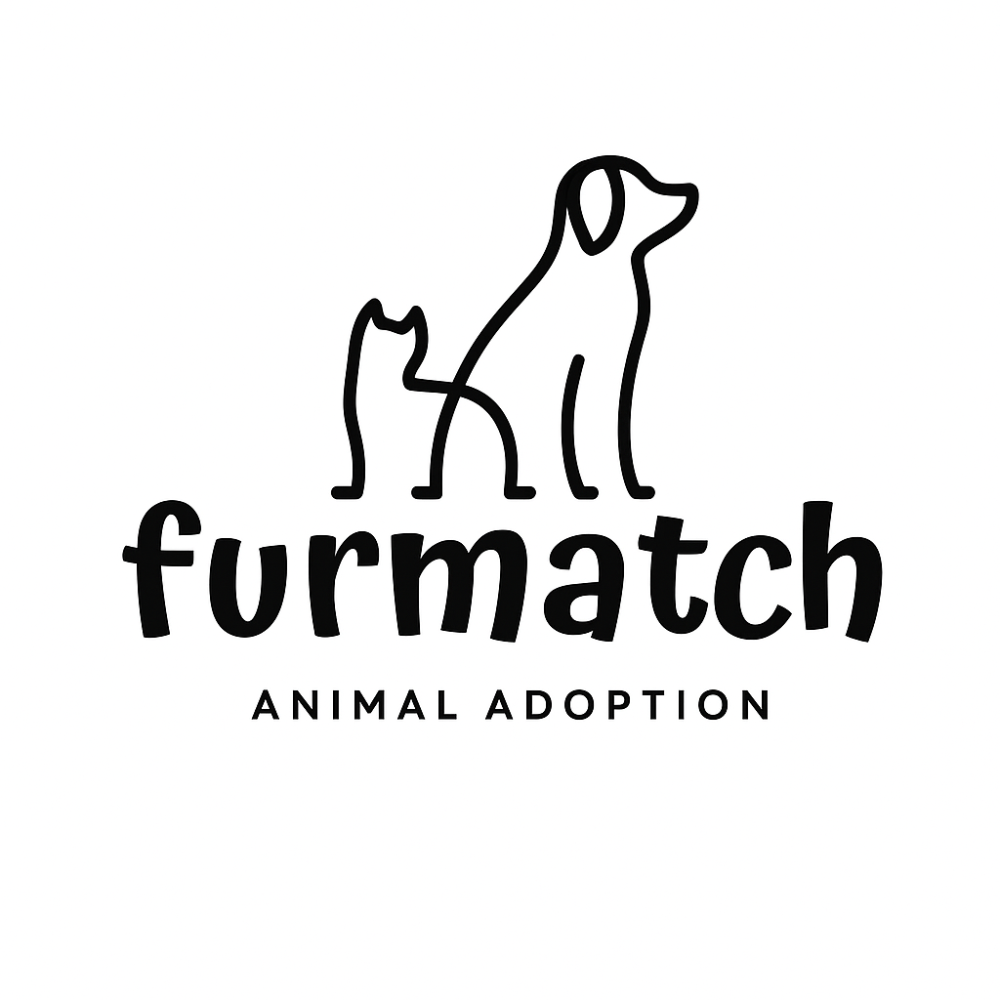
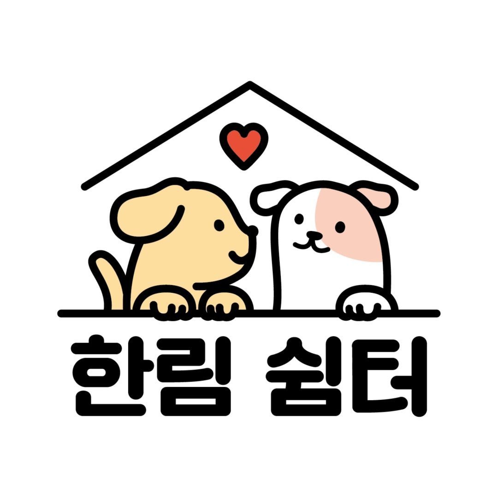
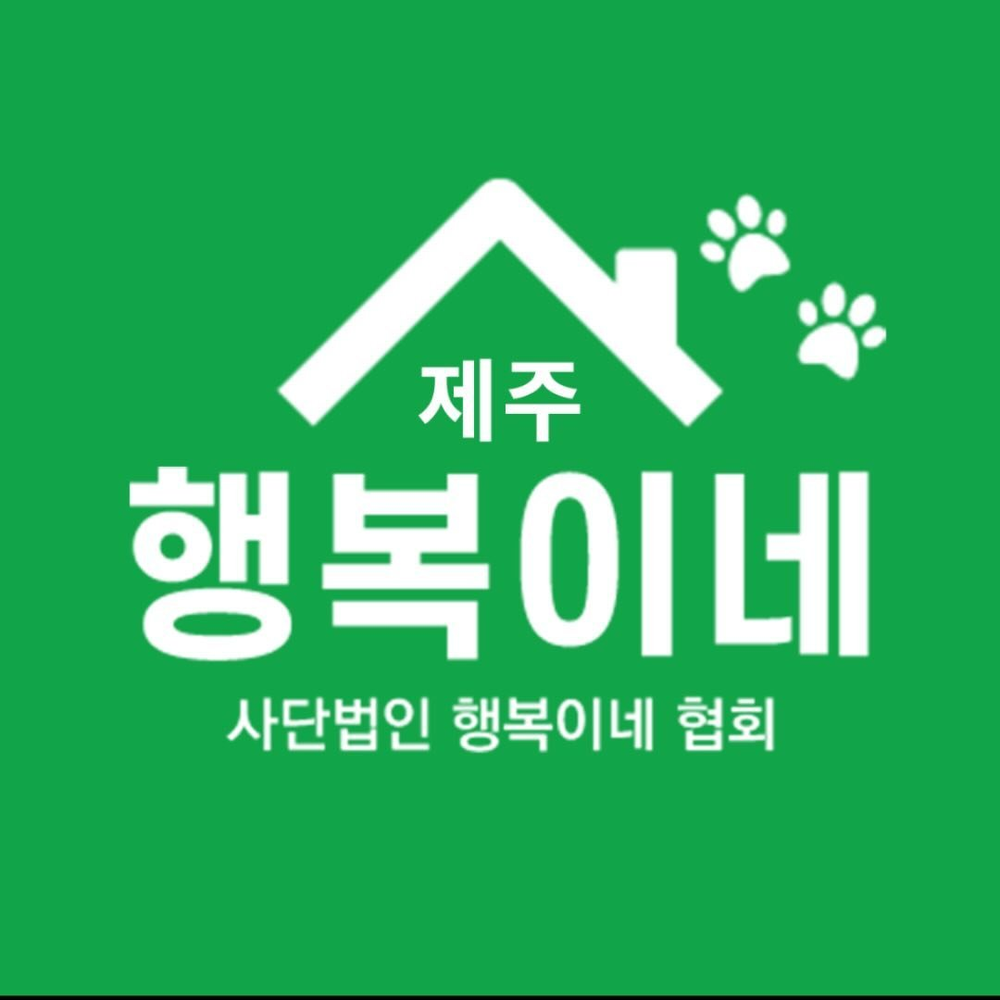
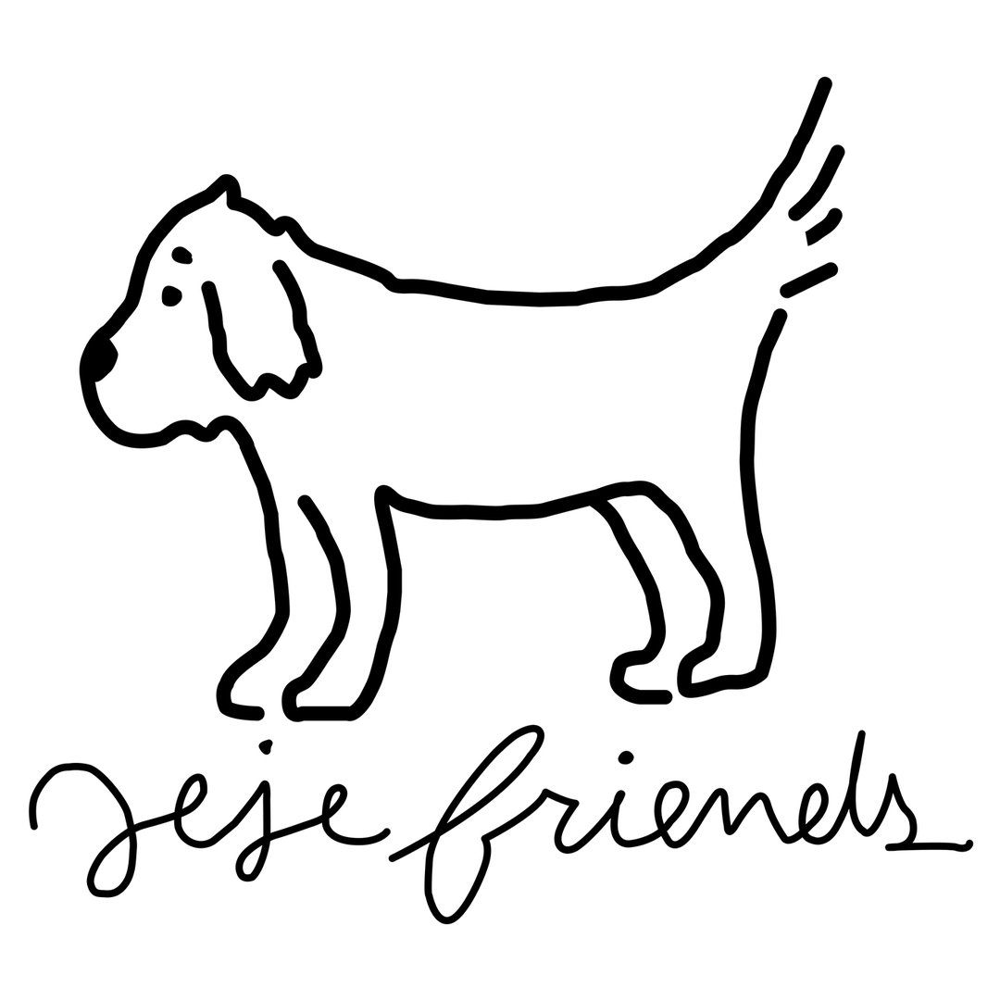

Our partners
HADS collaborates with organizations that care about both people and animals. Together we connect rescued dogs to families, support flight volunteers, and share stories that cross borders.
Tap a logo to visit each partner and learn more about our work together.
ICNtoHome
Flight volunteers for rescued dogs leaving ICN.

FurMatch
Adoption matching and storytelling for Korean rescue dogs.
FurFlight
Flight volunteer program helping adopted dogs reach new homes.

KORUS
Gratitude, care packages, and outreach with U.S. service members.

Hallim Animal Shelter
Long-term partner shelter caring for abandoned animals in Hallim.

Jeju Happy Shelter
Haengbokinae (Happy) Shelter partnership on Jeju Island.
BigDogForest
Animal Shelter located in Ilsan, South Korea with a focus on larger and older breed dogs.
Hondidorang
Dog and Cat shelter located in Seogwipo and Sanbangsan Mt.

JejeFriends
Looks over Hallim Animal Shelter and provides volunteering experience in Jeju Island.
Jeju Now
Street dog and cat rescue, provides volunteering experience for members.